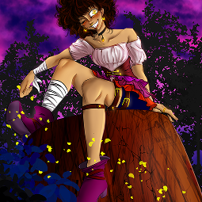
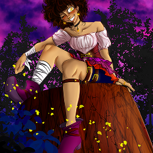

Illustrazioni
Il disegno è sempre stata una parte di me. Negli anni ho sperimentato con diversi stili, concentrandomi soprattutto sullo stile manga e semirealistico. La maggior parte dei miei lavori sono fan-art e illustrazioni originali, ma ultimamente sto sperimentando anche col character-design e le vignette umoristiche. Quest’ultima in particolare è dovuta a una collaborazione con la rubrica “Social comis” sul giornale “LaSicialia”.

 
